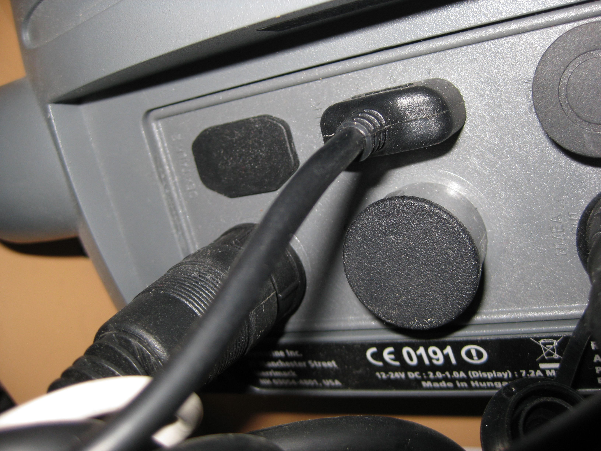

Datenquellen
Sie können Daten von verschiedenen Datenquellen aufzeichnen, die folgend beschrieben werden.
 Bluetooth
Bluetooth
Sie können Bluetooth benutzen, um NMEA Daten zu empfangen, wenn Ihr Gerät in der Lage ist Daten über das sogenannte Radio Frequency Communication (RFCOMM) Protokoll zu senden.
Um diese Schnittstelle benutzen zu können, müssen Sie den Bluetooth Empfänger an Ihrem Computer ebenfalls einschalten. Einige System erfragen ein Bluetooth Passwort, um sich mit dem Gerät zu verbinden.
Hinweis: Das Passwort wird vom Betriebssystem und nicht von der Anwendung erfragt.
Hinweis: Viele Bluetooth Geräte benutzen 0000 oder 1234 als Ausgangpasswort.
Hinweis: Um Bluetooth mit Linux nutzen zu können, müssen Sie ein zusätzliches Plugin herunterladen, da dieses unter der GPL lizensiert ist.
Serielle Schnittstelle
Serielle Schnittstellen können benutzt werden, um NMEA Daten zu empfangen. Diese Schnittstelle ist auch als RS232 oder als COM Schnittstelle bekannt und besteht aus einem neunpoligen Stecker, den
Sie an ihren Computer stecken können.
Hinweis: Unter Linux kann diese Schnittstelle möglicherweise nicht richtig arbeiten, wenn keine echte serielle Schnittstelle, sondern eine emulierte Schnittstelle vorliegt. Dies kann die Anwendung zum Absturz bringen.
Hinweis: Auf einigen wenigen Laptops kann die automatische Erkennung der Schnittstellen fehl schlagen, so dass die Anwendung steht. Sie können diese Situation umgehen, wenn Sie die Schnittstellen manuell in den Benutzereinstellungen setzen.
Verbinden von serielle Schnittstellen mit Bordequipment
Unglücklicherweise sind Stecker für NMEA 0183 nicht standardisiert, weshalb jedes Hersteller seinen eigenen Stecker verwendet.
Die meisten Hersteller bieten Adapterkabel an, die auf der einen Seite den Herstellerstecker haben und auf der anderen seite den 9 poligen seriellen Stecker anbieten.
Diese Kabel haben keine weiteren elektrischen Besonderheiten jedoch kosten Sie trotzdem überdurchschnittlich viel Geld. Das kann an deren Robustheit im Seebereich liegen.
Sie können diese Kabel durch eine Suche im Internet leicht bei verschiedenen Bootszubehöranbietern finden. Der folgende Abschnitt skizziert wie die herstellerseitigen Stecker aufgebaut sind.
Hinweis: Weder NMEA2000 noch Ethernet-basierte Netzwerke sind aktuell unterstützt. Ihr Gerät bietet möglicherweise keine weiteren Anschlüsse an. Auch herstellerspezifische Protokolle werden nicht unterstützt. Das beinhaltet SeaTalk oder NavNet.
Raymarine
Der Raymarine Stecker ist ein runder 5-pin Stecker wie man im Bild erkennen kann.

Beispielhafte Rückseite eines Raymarine Geräts:
Links unten ist der Stromstecker verbunden, oben links ist der SeaTalk² Stecker, der mit einer Schutzhülle versehen ist.
Der mittlere obere Stecker ist ein 3-pin SeaTalk Kabel während der untere mittlere Stecker für ein Radar ist (ebenfalls verdeckt).
Der obere rechte Stecker kann für ein digitales Echolot genutzt werden. Unten recht ist der kaum zu erkennende NMEA0183 Stecker,
der aktuell benutzt wird.

Furono
Wenn Sie für diesen Hersteller Informationen haben, senden Sie mir zu.
Lowrance
Lowrance Geräte nutzen ein zusammengesetztes Strom- und Datenkabel bei dem einige Adern für NMEA0183 Ausgabe genutzt werden.
Hierfür ist ein Kombistecker notwendig, der das Datenkabel ordnungsgemäß ausführt.
Garmin
GPSMAP 6000/7000 Geräte benutzen einen 19-pin Stecker bei dem 4 Pins für NMEA0183 Übertragungen genutzt werden.
Hierfür ist ein Kombistecker notwendig, der das Datenkabel ordnungsgemäß ausführt.
NMEA Gateways
Es gibt viele NMEA 0183 Schnittstellen Boxen, bei denen man direkt die Adern einen Kabels an Klemmen anschrauben kann.
Brookhouse offeriert zum Beispiel einen NMEA Multiplexer der NMEA0183 versendet und dies seriel, via USB und Bluetooth übertragen kann.
USB
USB wird nicht direkt unterstützt, jedoch sind viele Geräte in der Lage eine serielle Schnittstelle durch ihren nativen Treiber zu emulieren. In diesem Fall könnte Ihr gerät trotzdem funktionieren.
Hinweis: If you want to see the software's output with your hand held GPS device this may be done by setting the device to output NMEA 2.3 sentences and connecting afterwards.